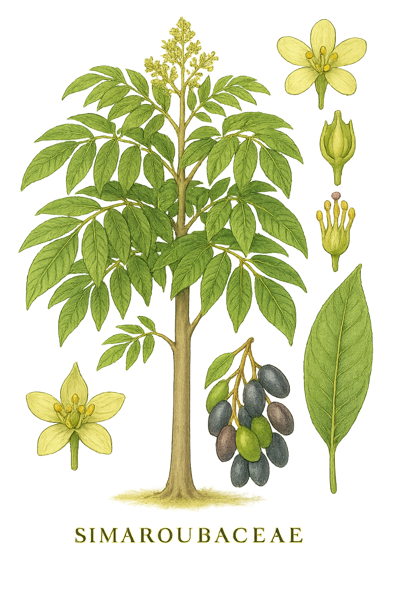

Simaroubaceae
Quassia Family / Tree-of-heaven Family
Simaroubaceae is a family of trees and shrubs belonging to the order Sapindales. Distributed mainly in the tropics but extending into temperate zones, its members often possess pinnately compound leaves and are known for producing intensely bitter compounds (quassinoids). Flowers are typically small and often unisexual, developing into fruits that are frequently aggregates of samaras or drupes. The family includes the infamous invasive Tree-of-heaven (Ailanthus altissima) and the medicinal genus Quassia.
Overview
The Simaroubaceae family is placed within the large and economically important order Sapindales, which also includes families like Rutaceae (citrus), Anacardiaceae (cashew, mango, poison ivy), and Sapindaceae (maples, lychee). Simaroubaceae itself comprises about 20-25 genera and 100-120 species of trees and shrubs.
The family exhibits a primarily pantropical distribution, but some genera, most notably Ailanthus, extend well into temperate regions of Asia and are now widely naturalized elsewhere. A defining characteristic of the family is the presence of extremely bitter triterpenoid compounds called quassinoids in the bark, wood, and leaves of most species. These compounds contribute to the historical use of some species (like Quassia amara) in traditional medicine and as insecticides, and also make the plants unpalatable to many herbivores.
While some species provide timber or have local uses, the family is perhaps best known globally for Ailanthus altissima (Tree-of-heaven), a fast-growing tree native to China that has become a highly invasive species in many parts of the world due to its rapid growth, prolific seed production (samaras), and allelopathic properties.
Quick Facts
- Scientific Name: Simaroubaceae
- Common Name: Quassia family, Tree-of-heaven family
- Number of Genera: Approximately 20-25
- Number of Species: Approximately 100-120
- Distribution: Pantropical, extending into temperate regions
- Evolutionary Group: Eudicots - Rosids - Malvids - Sapindales
Key Characteristics
Growth Form and Habit
Members are predominantly trees or shrubs, ranging from small shrubs to large forest trees. They can be deciduous or evergreen. A key physiological feature is the common presence of intensely bitter substances (quassinoids) throughout the plant tissues. Some species, like Ailanthus, have a strong, unpleasant odor when leaves or twigs are crushed.
Leaves
Leaves are usually arranged alternately along the stem (rarely opposite). They are typically pinnately compound, often large, although simple, trifoliolate, or bipinnate leaves occur in some genera. Leaflets commonly have entire margins, but sometimes possess characteristic glandular teeth near the base. Stipules are absent (exstipulate).
Inflorescence
Flowers are typically borne in axillary or terminal inflorescences, which are often large, branched panicles, though cymes or racemes also occur.
Flowers
Flowers are generally small, inconspicuous, radially symmetrical (actinomorphic), and most often unisexual (plants being dioecious, monoecious, or polygamous), although bisexual flowers occur in some. Key floral features include:
- Calyx: Usually 3-5 (rarely up to 8) small sepals, which may be distinct or fused at the base.
- Corolla: Usually 3-5 (rarely up to 8) distinct (free) petals, often small, sometimes absent.
- Androecium: Stamens usually equal in number to the petals or, more commonly, twice the number of petals (typically 5 or 10 total). Filaments are distinct, often bearing a small scale-like appendage at the base. Stamens arise from the base or outside of the nectar disc.
- Gynoecium (in female/bisexual flowers): Composed of 2-5(-8) carpels. These carpels may be entirely free (apocarpous) except perhaps for fused styles, or they may be fused only at the base (syncarpous basally) while remaining distinct above. The ovary is positioned superiorly. Each carpel or ovary locule typically contains a single (rarely two) ovule. Styles may be free or fused.
- Nectar Disc: A nectar-producing disc is usually present within or surrounding the base of the stamens (intrastaminal).
Fruits and Seeds
The fruit type is variable and reflects the gynoecium structure. Often, it is an aggregate of separate, one-seeded fruitlets developing from the free or basally fused carpels. Common fruit types include winged achenes (samaras), as seen in Ailanthus, or fleshy drupes, as in Simarouba and Picrasma. Less commonly, fruits can be berries or capsules (if carpels are more fully fused). Seeds often contain oil; endosperm may be present or absent.
Chemical Characteristics
The family is chemically defined by the presence of complex triterpenoid compounds known as quassinoids. These are responsible for the extreme bitterness found in many species and have various biological activities (insecticidal, antimalarial, etc.).
Field Identification
Identifying members of Simaroubaceae often involves recognizing their tree/shrub habit combined with compound leaves and characteristic fruits, along with the often bitter taste:
Primary Identification Features
- Habit: Look for trees or shrubs.
- Leaves: Usually alternate, pinnately compound (check for terminal leaflet), and exstipulate.
- Taste/Smell: Bark or leaves often have an intensely bitter taste (use caution!). Ailanthus leaves/twigs have a characteristic unpleasant odor (often likened to burnt peanut butter) when crushed.
- Flowers: Generally small, radially symmetric, often unisexual, typically borne in large panicles. Look for 3-5 sepals, 3-5 free petals, and usually 5 or 10 stamens.
- Gynoecium/Ovary: Ovary is superior; look closely to see if carpels appear separate or only basally fused (may look like multiple small pistils clustered together).
- Fruit: Often distinctive aggregates of winged samaras (like Ailanthus) or fleshy drupes.
Secondary Identification Features
- Stamen Base: Check for small appendages at the base of stamen filaments (may require magnification).
- Nectar Disc: Presence of a disc at the flower base.
- Distribution: Pantropical range, with Ailanthus common in temperate zones (often invasive).
Seasonal Identification Tips
- Growing Season: Compound leaves are a key feature.
- Flowering: Large panicles of small flowers can be noticeable, though individual flowers are inconspicuous.
- Fruiting: The aggregate fruits, especially the winged samaras of Ailanthus (often reddish when maturing) or the drupes of other genera, are often very characteristic in late summer or fall.
- Year-round: Bitter taste of bark/twigs (use caution). Woody habit.
Common Confusion Points
- Anacardiaceae (Sumac family): Also Sapindales, often compound leaves. Differ in often having resin canals (sometimes causing rash), usually single drupe fruits, and different floral details.
- Rutaceae (Citrus family): Also Sapindales, often compound leaves. Distinguished by aromatic oil glands (pellucid dots) in leaves and often very different fruit types (hesperidium, etc.).
- Meliaceae (Mahogany family): Also Sapindales, usually compound leaves. Distinguished by typically having stamens fused into a tube and different fruit types (often capsules).
- Fabaceae (Legume family): Many trees/shrubs with compound leaves. Distinguished by having stipules, characteristic legume fruit pods, and often specialized flower types (e.g., pea-like).
- Juglandaceae (Walnut family): Trees with compound leaves. Differ in being wind-pollinated (catkins), having inferior ovaries, and fruit being a nut (often in a husk).
Field Guide Quick Reference
Look For:
- Tree or shrub
- Leaves usually alt., pinnately compound, exstipulate
- Bitter taste (bark/leaves)
- Small, radial flowers (often unisexual) in panicles
- Ovary superior, carpels often separate/basally fused
- Fruit often aggregate of samaras or drupes
Key Distinctions:
- No stipules (vs. Fabaceae)
- No resin ducts/rash (vs. Anacardiaceae)
- No pellucid dots/citrus scent (vs. Rutaceae)
- Stamens usually free (vs. fused tube in Meliaceae)
- Ovary superior (vs. Juglandaceae)
Notable Examples
The Simaroubaceae family includes ecologically significant invasive species as well as plants used traditionally:

Ailanthus altissima
Tree-of-heaven
A fast-growing deciduous tree native to China, now a widespread invasive species in temperate regions worldwide. It has large, pinnately compound leaves with an unpleasant odor when crushed, large terminal panicles of small greenish flowers (usually unisexual), and produces dense clusters of reddish, winged samara fruits.

Simarouba glauca
Paradise Tree, Aceituno
An evergreen tree native to the Neotropics (Florida, Caribbean, Central/South America). It has pinnately compound leaves and bears panicles of small, whitish flowers. The fruit is an aggregate of small, dark purple, olive-like drupes. The seeds yield an edible oil (Aceite de Aceituno).

Quassia amara
Quassia, Amargo
A shrub or small tree native to northern South America and the Caribbean. It is the source of quassia wood, renowned for its extreme bitterness due to high concentrations of quassinoids. Extracts have been used traditionally as a febrifuge, digestive tonic, and insecticide. Features pinnately compound leaves with winged rachises and racemes of often bright red flowers.
Phylogeny and Classification
Simaroubaceae is a family within the large order Sapindales, which is part of the Malvid clade within the Rosids. This order includes many economically important families like Sapindaceae (maples, lychee), Rutaceae (citrus), Anacardiaceae (cashew, mango, pistachio), and Meliaceae (mahogany).
The circumscription of Simaroubaceae has fluctuated somewhat historically, with certain genera sometimes segregated into smaller families (e.g., Picramniaceae, Surianaceae, Irvingiaceae, Kirkiaceae). However, molecular phylogenetic studies generally support a core Simaroubaceae (including Ailanthus, Simarouba, Quassia, Picrasma, Brucea, etc.) as a monophyletic group within Sapindales. Its relationships to other families within the order are complex and subject to ongoing research, but it is clearly distinct from families like Rutaceae or Anacardiaceae.
Position in Plant Phylogeny
- Kingdom: Plantae
- Clade: Angiosperms (Flowering plants)
- Clade: Eudicots
- Clade: Rosids
- Clade: Malvids
- Order: Sapindales
- Family: Simaroubaceae
Evolutionary Significance
The Simaroubaceae family is significant for:
- Representing a Lineage in Sapindales: Contributes to the diversity of the large and economically significant Sapindales order.
- Chemical Evolution: The evolution and diversification of potent bitter compounds (quassinoids) represent a key chemical defense strategy within this lineage.
- Fruit Type Diversity: Exhibits a range of fruit types derived from an often apocarpous or basally syncarpous gynoecium, including aggregates of samaras and drupes.
- Biogeography: Its pantropical distribution with temperate extensions (like Ailanthus) provides insights into the historical spread and adaptation of Sapindales lineages.
- Invasive Species Biology: Ailanthus altissima serves as a major model system for studying the ecology and genetics of invasive plant species.